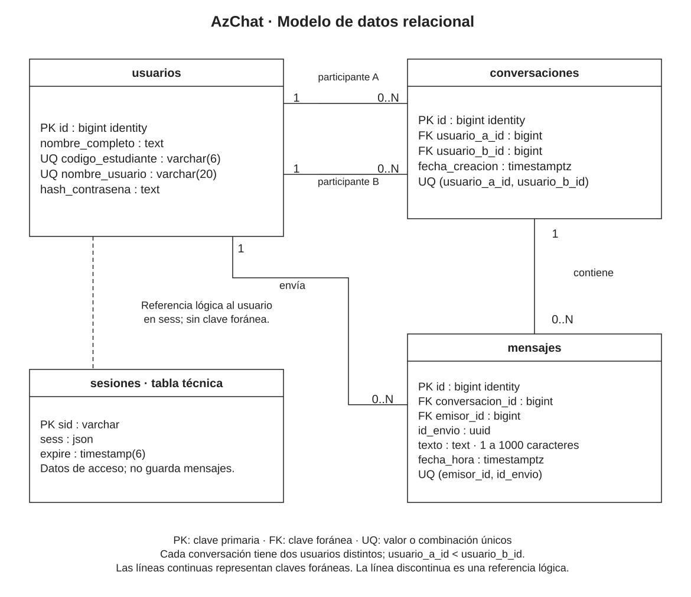

Paso 11 de 12 · Modelo de datos
La información que se conserva
Qué se guarda para volver a consultar las conversaciones.
Qué se guarda y para qué
- Usuarios
- Los datos necesarios para identificar cada cuenta y comprobar el ingreso.
- Conversaciones
- Los dos participantes de cada chat privado. La misma pareja comparte una única conversación.
- Mensajes
- El texto, la persona que lo envió y su fecha y hora. Esto permite consultar el historial.
- Sesiones
- Los datos temporales de acceso. Cerrar o vencer una sesión no borra las conversaciones.
Cómo se relaciona la información
Cada mensaje se vincula con una conversación y su emisor. De esta forma, el sistema puede recuperar el historial correcto y comprobar que solo lo consulten sus participantes.


Ampliar diagramaQué ocurre al volver a entrar
La cuenta y los mensajes confirmados seguirán guardados. La aplicación consultará el historial en partes para no cargarlo todo a la vez. Se comprobará su recuperación también cuando varias personas envíen mensajes al mismo tiempo.
Documento técnico de este paso
Consulte el desarrollo completo, los modelos y las especificaciones en el archivo Word.
Descargar documento técnico (.docx)